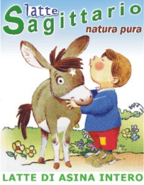

Cos'è il latte di Asina?
Il latte di Asina è un latte speciale prodotto in allevamenti di asino specializzati. Il latte di Asina è un alimento per neonati o per persone con elevato grado di intollerabilità verso il latte vaccino o di altri animali.
L'Azienda Sagittario, situata nel comune di Lauria, alle pendici del Monte La Spina "all'ombra" dei Pini Loricati è una nuova realtà produttiva di questo prodotto, una delle prime Nel Sud Italia e sicuramente l'unica in Basilicata.
Proprietà del Latte d'Asina
Il latte di asina ideale per i bambini allergici al latte di mucca; lo dimostra una ricerca condotta dall’Istituto di Scienze delle Produzioni Alimentari, sezione di Torino del Consiglio Nazionale delle Ricerche.
“Cio che rende così ben tollerato questo latte è la sua grande somiglianza con quello umano” (Amedeo Conti I.s.p.a. C.N.R.)
Il Latte di asina ha, inoltre, un contenuto di acidi polinsaturi del tutto simile a quello materno ed è molto ricco di lisozima, una proteina caratterizzata da elevata proprietà antibatterica, in grado di proteggere il neonato da possibili patologie.
“Anche il rapporto calcio-fosforo e il contenuto proteico totale sono simili a quello umano” (Amedeo Conti I.s.p.a. – C.N.R.)
Il latte Sagittario è prodotto esclusivamente da soggetti allevati nella omonima azienda, sottoposti a sistematici controlli igienico-sanitari.
Nessun artificio viene usato per provocare una lattazione più abbondante.
Sagittario dedica massima attenzione ad ogni elemento capace di influenzare la buona salute dei suoi animali e quindi la produzione di latte della migliore qualità.
Sagittario offre ai suoi equidi vasti pascoli incontaminati, stabulazione idonea a garantire le migliori condizioni igieniche, alimentazione esclusivamente vegetale con prodotti ottenuti senza uso di concimi chimici.
Il sistema di mungitura meccanica, la sterilizzazione dei contenitori e degli ambienti costituiscono una indispensabile garanzia di igiene.
L’azienda Sagittario s.r.l. produce e vende latte di asina intero, prodotto e pastorizzato nella propria sede sita in Contrada Cerase di Lauria (PZ).
Come comprare il LATTE DI ASINA
Il latte può essere consegnato in qualsiasi località italiana.
Il costo di un litro di latte è di 15 euro al litro + le spese di consegna.
E’ consigliabile un ordine minimo di 15 litri, sufficiente per circa un mese di lattazione.
Il latte può essere conservato in frigo.
Contattateci usando l'apposito modulo
1. nome e cognome
2. Indirizzo per la spedizione
3. quantità
COMPRARE IL LATTE
Ospedali, pediatri, farmacie e privati interessati a provare il nostro prodotto, o avere ulteriori informazioni possono chiamarci dalle 14 alle 20 allo 0973.669290 o scrivere a >
Prenotazioni
Punti Vendita
Stiamo cercando di realizzare una rete di negozi nelle grandi città dove poter acquistare direttamente il nostro prodotto.
Segnalateci a
Contatti qualche esercente farmaceutico o sanitario interessato.
{% endblock %}